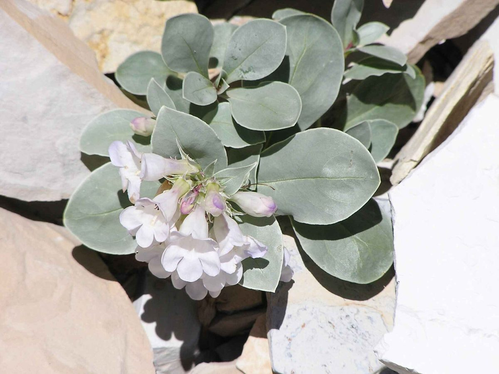
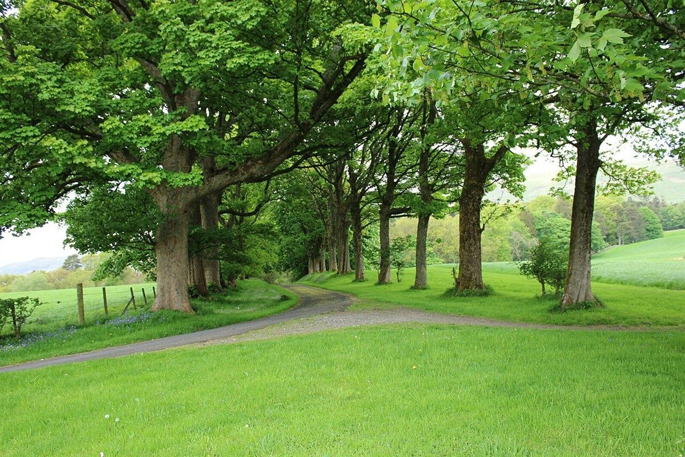
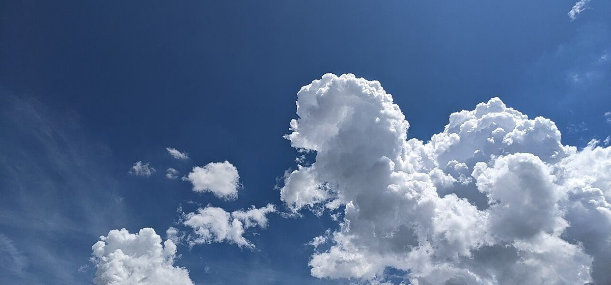
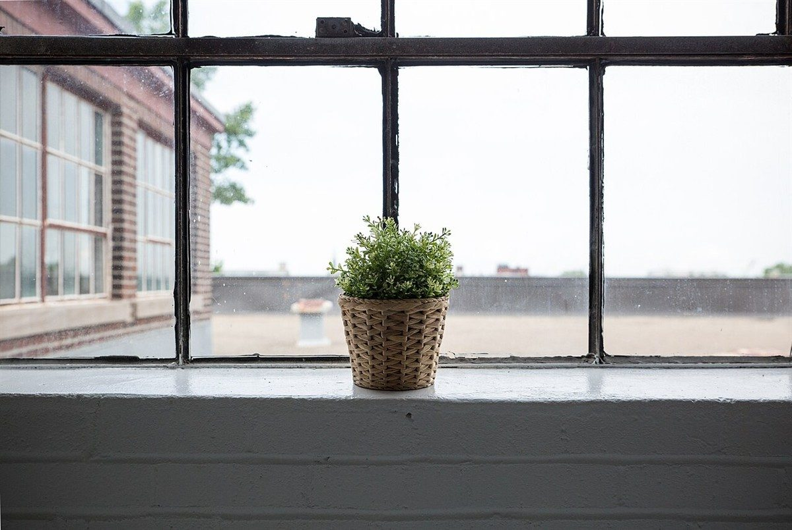
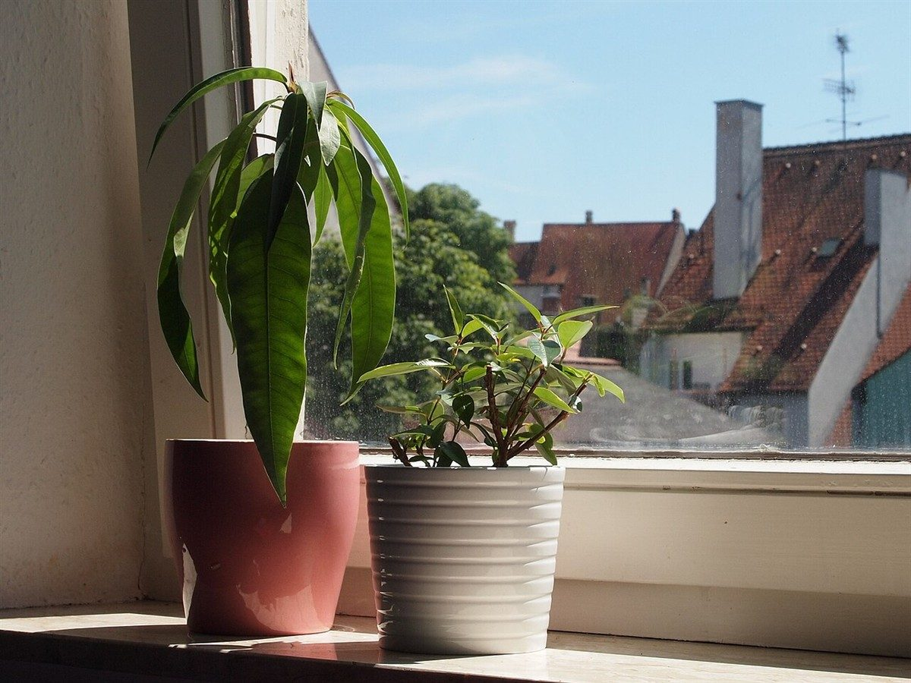
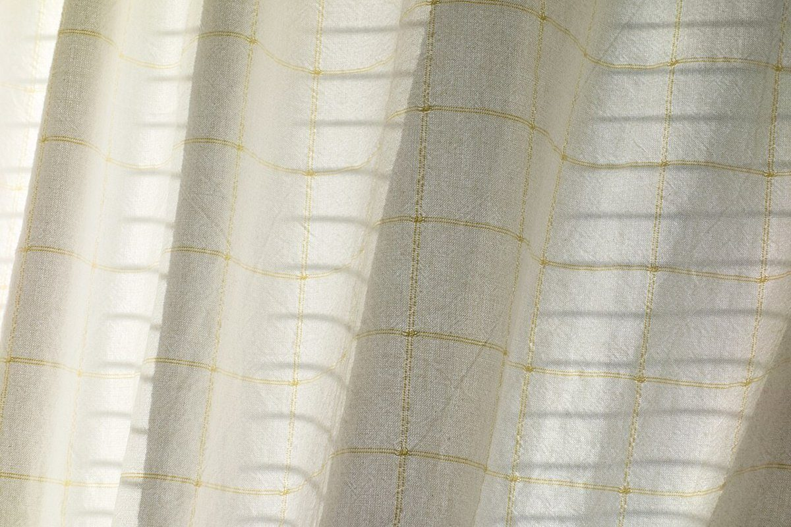
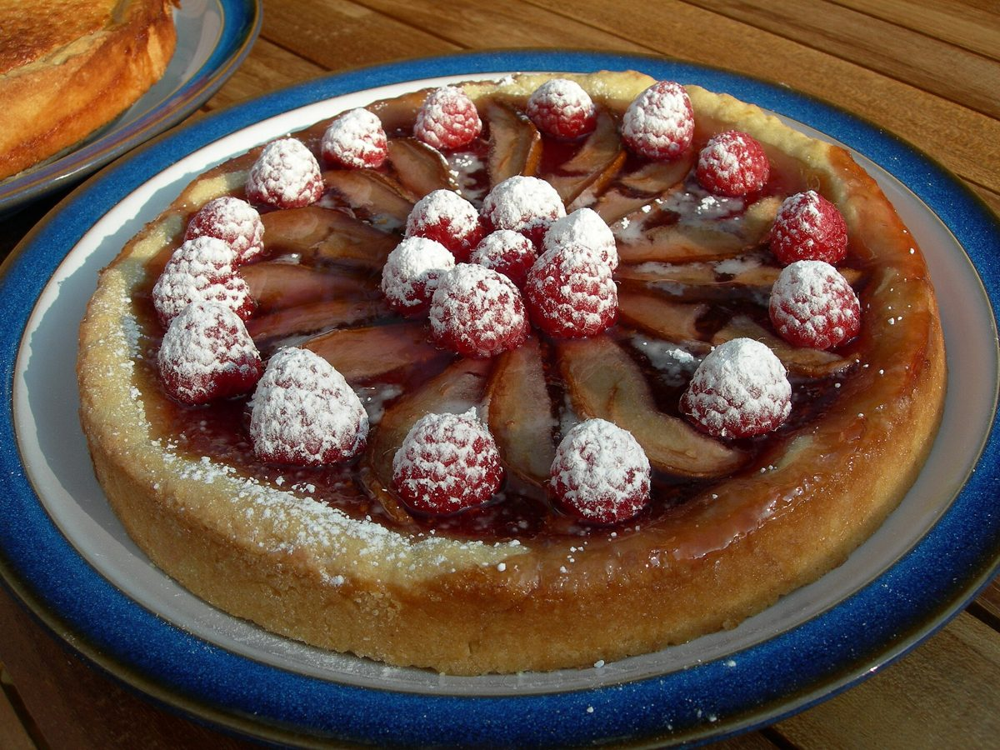
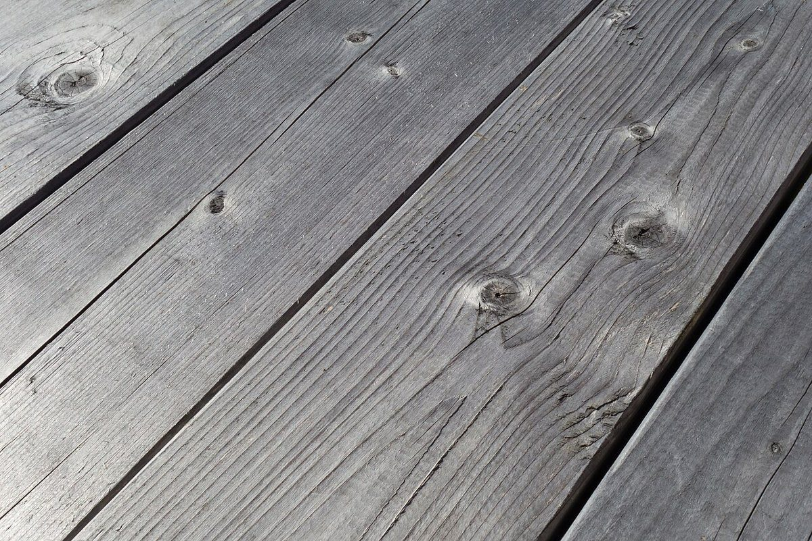
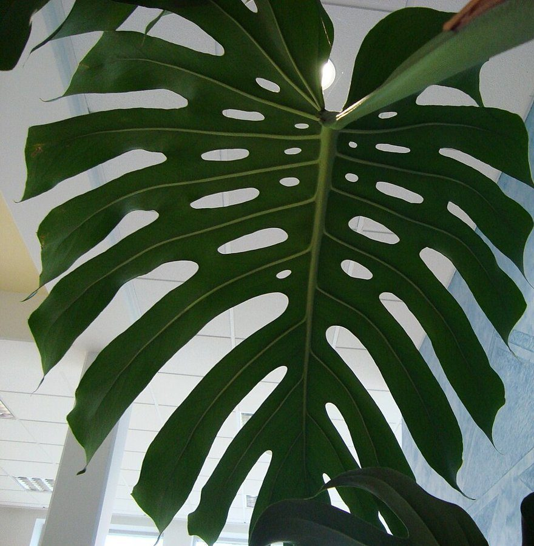

VINEYARD CAFE / 山口県萩市片俣
萩の風土を、
ぶどうと一杯の時間で。
昼夜の寒暖差が大きい山あいで育てるぶどう園に寄り添う、小さなテイクアウトカフェです。
お店の想い場所を見るABOUT
ワインを通じて、萩の美しさを。
店主の寺田さんは2021年に東京から萩へ移住し、ワイン用ぶどうの栽培とワイナリー設立を目指しています。公式サイトでは「ワインを通じて萩の風土とその美しさを感じてもらいたい」という願いが語られています。
カフェは2024年12月にオープン。ワインの存在を広める第一歩として、萩市北部の片俣、道の駅の向かいに開かれました。ワインショップを併設し、垣根仕立ての小さなぶどう園を眺めながら過ごせる場所です。
店名の意味は確認できていないため、ここでは触れません。
GALLERY
山あいの空気を思わせる景色
写真は国外・撮影地不明のフリー素材で、萩市やお店の実際の様子ではありません。






MENU
食事・甘いもの・ドリンク

小川地区の桃を使ったかき氷が名物と紹介されています。ほかにカレーやクラムチャウダーなどをテイクアウト中心で提供している、と報じられています(2025年時点の情報)。
テラス席もあるようです。
営業時間・価格・詳細: 準備中 営業日はInstagramで告知されているとのことです。




VOICE
口コミ(イメージ例)
イメージ例
山の空気の中で食べるかき氷は格別でした。ほどよい甘さが夏にぴったりです。
ご来店のお客様イメージ例
テイクアウトしたカレーをテラスで。ぶどう園を眺めながらの昼ごはんは気持ちよかったです。
ご来店のお客様イメージ例
道の駅のついでに立ち寄りました。ワインの話もゆっくり聞けそうで、また来たいです。
ご来店のお客様上記は制作側が作成したイメージ例で、実在のお客様の声ではありません。